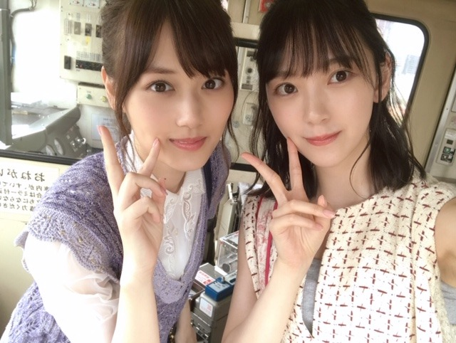

2019/0818Sun梅干し確保
やほう
くしゃみと鼻水がとまらない〜！
そして喉もやられています
何か花粉飛んでるかな？？？
まさか、秋花粉？？
アレルギー体質すぎて何に反応してるか分からず...


路面電車の街 のmv撮影は鈍行列車に揺られてずっと眠かったです。笑
完成したmvを見たら、なんだかほろっと泣ける話になっていました
ぜひ！
そういえばモバメでウィッグを被って金髪にしました〜って騒がせちゃいました。笑
へへへ〜
ごめんね、
染めてないよ〜☺︎
でもいつか役とかで染めれたらいいな
ベリーショートにもしてみたい！！
夏があっという間に終わっちゃうね☺︎
この間、日奈子とみり愛と絢音と蘭世と遊んだの！
次のブログに書きます。
めーちゃ楽しかったよ。ずっとふざけてる。笑
大好き❤︎

NHKサッカーのCMのとき。
いつかサッカーの試合生で見たいなぁ
実はスポーツ観戦好き☺︎
水泳、バレーボールも興味あります☺︎
ではでは
あ、また美味しそうな梅干し買いました！
塩分17%と15%のやつ！たのしみたのしみ
2019/08/18 14:42
コメント(364)
未央奈ブログ更新ありがとう
秋花粉症！？初めて聞いたぁ…もしかしたらほこりとかかもね モバメの未央奈の金髪めちゃくちゃびっくりした∑(๑ºдº๑)!!
まぁ〜未央奈はどんな髪色でも似合うと思うから大丈夫やと思う！梅か…俺食べれへんな〜笑なんでやろ？でも体にもいいし、熱中症対策になるらしいから食べたほうがいいねんて！
それじゃあまたの…
しんちゃん
秋花粉症！？初めて聞いたぁ…もしかしたらほこりとかかもね モバメの未央奈の金髪めちゃくちゃびっくりした∑(๑ºдº๑)!!
まぁ〜未央奈はどんな髪色でも似合うと思うから大丈夫やと思う！梅か…俺食べれへんな〜笑なんでやろ？でも体にもいいし、熱中症対策になるらしいから食べたほうがいいねんて！
それじゃあまたの…
しんちゃん
最近、くしゃみと鼻水が出ます。この時期ら稲の花粉が飛んでいてツラいです。
大阪行きましたー！
近くで見れてほんとかわいくて良かったですー！！
路面電車の街見ました！
昔の感じの雰囲気が個人的にはすごく好きです！！
花粉？に負けず頑張って下さい！！
近くで見れてほんとかわいくて良かったですー！！
路面電車の街見ました！
昔の感じの雰囲気が個人的にはすごく好きです！！
花粉？に負けず頑張って下さい！！
なにか新しいドラマか映画があるのかな？
それか、9月から始まる新プロジェクトが関係しているのかな？と思いましたよ。
ああ、ウィッグの話です(笑)
体調大丈夫でしょうか？健康にはお気を付けてと言うぐらいしか自分にできることはないかもしれないけど、心配です
健康のためにも梅干しをぜひとも食べてください
アレルギーに効果があるのかどうかはわからないけど
どうか自分をいたわって！
それか、9月から始まる新プロジェクトが関係しているのかな？と思いましたよ。
ああ、ウィッグの話です(笑)
体調大丈夫でしょうか？健康にはお気を付けてと言うぐらいしか自分にできることはないかもしれないけど、心配です
健康のためにも梅干しをぜひとも食べてください
アレルギーに効果があるのかどうかはわからないけど
どうか自分をいたわって！
可愛い！可愛い…！！(｀；ω；´)
神宮初日行きます！みおなに会えるの本当に楽しみにしてます！
次のブログ楽しみにしてるね( ◜ω◝ )♡
神宮初日行きます！みおなに会えるの本当に楽しみにしてます！
次のブログ楽しみにしてるね( ◜ω◝ )♡
更新ありがとう！
なんかね、俺もめっちゃくしゃみと鼻水がすごいの！笑
今サッカー観戦来てるよ〜！
試合までまだ時間あるけど、もう一日外にいるから倒れそ笑笑
なんかね、俺もめっちゃくしゃみと鼻水がすごいの！笑
今サッカー観戦来てるよ〜！
試合までまだ時間あるけど、もう一日外にいるから倒れそ笑笑
騙されましたヾ(>y<;)ノうわぁぁ
だけど金髪好き
今の髪も好きです!
自分の思うままがいい!
応援します！
だけど金髪好き
今の髪も好きです!
自分の思うままがいい!
応援します！
更新ありがとう~！
写真美人すぎて直視できないよ~！！！笑
カチューシャも似合ってる☺︎
本当に金髪にしたんだと思ってた！笑金髪もロングもショートも何でも似合っちゃうなんて素敵すぎます！！
美月ちゃんとの2ショットもかわいい☺︎この２人の組み合わせ個人的にすごい好きです~！
暑さに気をつけて頑張ってね！全握楽しみすぎる~！
写真美人すぎて直視できないよ~！！！笑
カチューシャも似合ってる☺︎
本当に金髪にしたんだと思ってた！笑金髪もロングもショートも何でも似合っちゃうなんて素敵すぎます！！
美月ちゃんとの2ショットもかわいい☺︎この２人の組み合わせ個人的にすごい好きです~！
暑さに気をつけて頑張ってね！全握楽しみすぎる~！
このツーショット大好きだ
推しメン二人
推しメン二人
やほう。
ちょっと辛そうですね。
台風からの暖かい風が、フェーン現象で
乾燥するから、粘膜にはよくないね。
今時、何が飛んでるか分からないし。
路面電車の街、いい曲ですね。ＮＨＫの
朝ドラのテーマ曲にもなりそう。

可愛い５人で遊んだようですね。
みいなのいらずらっぽい笑顔が目に浮か
びます。
スポーツ観戦に外での仕事、夏は塩分が
欠かせません。梅みおな？
ちょっと辛そうですね。
台風からの暖かい風が、フェーン現象で
乾燥するから、粘膜にはよくないね。
今時、何が飛んでるか分からないし。
路面電車の街、いい曲ですね。ＮＨＫの
朝ドラのテーマ曲にもなりそう。
可愛い５人で遊んだようですね。
みいなのいらずらっぽい笑顔が目に浮か
びます。
スポーツ観戦に外での仕事、夏は塩分が
欠かせません。梅みおな？
堀ちゃんお疲れ様です！
今回のブログの更新もお写真が凄く可愛いです！
づっきーとのツーショットめちゃくちゃ可愛いよ～
自分もくしゃみが出てくるようになってきました…
同じような秋花粉かな？これからまた苦しくなってくるなぁ
でも元気に過ごせば吹っ飛ぶよね！頑張っていこー！
ツアーも最終盤なので体調に気をつけて頑張ってください！！
今回のブログの更新もお写真が凄く可愛いです！
づっきーとのツーショットめちゃくちゃ可愛いよ～
自分もくしゃみが出てくるようになってきました…
同じような秋花粉かな？これからまた苦しくなってくるなぁ
でも元気に過ごせば吹っ飛ぶよね！頑張っていこー！
ツアーも最終盤なので体調に気をつけて頑張ってください！！
是非浦和レッズという埼玉にあるサッカーチームに来てみてください！
スタジアムも代表で使われたり、圧巻の応援が観れますよ！
スタジアムも代表で使われたり、圧巻の応援が観れますよ！
ブログ更新ありがとう！！
良いツーショットだ！路面電車の街良いMVだったね
金髪はウィッグだったんだね…なんかちょっと安心した笑
夏バテに注意だね…梅干し苦手だから、塩分を忘れがちになっちゃう 少し夏バテ気味…体調管理は大事！！
またね
良いツーショットだ！路面電車の街良いMVだったね
金髪はウィッグだったんだね…なんかちょっと安心した笑
夏バテに注意だね…梅干し苦手だから、塩分を忘れがちになっちゃう 少し夏バテ気味…体調管理は大事！！
またね
かわいい(*≧з≦)
ブログ更新ありがとう！
今日もかわいい〜
まだまだ暑い日が続くから梅干し食べて頑張ってね！
今日もかわいい〜
まだまだ暑い日が続くから梅干し食べて頑張ってね！
一緒に世界最強チームレアル・マドリーの試合を見に行きませんか
お疲れ様＾＾
よし！じゃその梅干しを日村さんにも食べさせてあげよう♪笑
よし！じゃその梅干しを日村さんにも食べさせてあげよう♪笑
未央奈、可愛いばかりの写真達、
ありがとう。
暑さが少し和らぎました。
金髪も可愛いかったけど、
やっぱり、
黒髪がいいなぁ。
久々のロングも見たいなぁ。
ま、どんな未央奈でも、
推して応援し続けるけどね。
色々アレルギー大変だろうけど、
くれぐれも、
身体には気をつけてね。
ありがとう。
暑さが少し和らぎました。
金髪も可愛いかったけど、
やっぱり、
黒髪がいいなぁ。
久々のロングも見たいなぁ。
ま、どんな未央奈でも、
推して応援し続けるけどね。
色々アレルギー大変だろうけど、
くれぐれも、
身体には気をつけてね。
未央奈ブログ更新ありがとう！
モバメで見た時びっくりしたよ！
あれウィッグだったんだね！
路面電車のMV見たけど泣けるシーンとかあるよね！
路面電車何回も観てるよ！
美月ちゃんとのツーショット可愛いし、良いね！
またコメントします！
モバメで見た時びっくりしたよ！
あれウィッグだったんだね！
路面電車のMV見たけど泣けるシーンとかあるよね！
路面電車何回も観てるよ！
美月ちゃんとのツーショット可愛いし、良いね！
またコメントします！
こんにちは。ブログありがとうございます。
メンバーと遊んだり、金髪にして遊んでみたり、生き生きとされている感じがして和みました。ありがとうございます。
楽しいことも楽しみなこともあってなによりです。
メンバーと遊んだり、金髪にして遊んでみたり、生き生きとされている感じがして和みました。ありがとうございます。
楽しいことも楽しみなこともあってなによりです。
みおなちゃん、こんにちは。
路面電車の街のMV、僕は見たよ。とてもすばらしいMVですね。みおなちゃん、めっちゃかわいかったよ。路面電車の街 、めっちゃいい曲ですね。
２４ｔｈシングル、僕は全タイプ絶対買うね。発売日がめっちゃ楽しみです。
4枚目の写メのみおなちゃん、めっちゃかわいいです。
みおなちゃん、体調に気をつけて仕事頑張ってね。
またコメントするね。
路面電車の街のMV、僕は見たよ。とてもすばらしいMVですね。みおなちゃん、めっちゃかわいかったよ。路面電車の街 、めっちゃいい曲ですね。
２４ｔｈシングル、僕は全タイプ絶対買うね。発売日がめっちゃ楽しみです。
4枚目の写メのみおなちゃん、めっちゃかわいいです。
みおなちゃん、体調に気をつけて仕事頑張ってね。
またコメントするね。
未央奈ちゃん、こんちは！
ブログ更新お疲れ様です
なんかの花粉飛んでいると思いますね
鼻づまりするし
ブロンド騒動に巻き込まれたひとりです
でも、ファンだから許しちゃいます
リアルにブロンドの未央奈氏を見たいね
あと、梅干し、塩分高いの食べるね
食べ過ぎに気をつけて
ではは
ブログ更新お疲れ様です
なんかの花粉飛んでいると思いますね
鼻づまりするし
ブロンド騒動に巻き込まれたひとりです
でも、ファンだから許しちゃいます
リアルにブロンドの未央奈氏を見たいね
あと、梅干し、塩分高いの食べるね
食べ過ぎに気をつけて
ではは
お疲れ様なのです└(ﾟ∀ﾟ└) (┘ﾟ∀ﾟ)┘
花粉は一年中飛んでるさね！(σ*´∀｀)
気にしないのがコツだったり？
ネイル可愛い(*≧з≦)ね
シンプルが素敵(*´･ω･｀)b
梅干しのおにぎりが食べたい！
海苔巻く派or巻かない派？
海苔は炙るとうまい！
体調に気を付けて(*>д<)
んじゃね～！Σ⊂(ﾟДﾟ ) 金髪縦ロール
花粉は一年中飛んでるさね！(σ*´∀｀)
気にしないのがコツだったり？
ネイル可愛い(*≧з≦)ね
シンプルが素敵(*´･ω･｀)b
梅干しのおにぎりが食べたい！
海苔巻く派or巻かない派？
海苔は炙るとうまい！
体調に気を付けて(*>д<)
んじゃね～！Σ⊂(ﾟДﾟ ) 金髪縦ロール
こんにちはー！
体調に気をつけて頑張ってください！！！！
応援してます✌️
サッカー観戦一緒に行きましょう‼️
なんちゃって(笑)
未央奈ちゃんブログ更新ありがとう！
大阪公演可愛かった！！
大阪公演可愛かった！！
未央奈ちゃんこんにちは‼ありがとうございます！頑張ります‼頑張って下さい！ありがとうございます！頑張ります‼すいません。
更新有難う！
御疲れ様でした！
常々可愛いな、
色んなこと楽しんでね。
何時も頑張って下さい、
常に必ずしても応援しています。
どうか御身体に気を付けて下さい！
ずっと大好き！

御疲れ様でした！
常々可愛いな、
色んなこと楽しんでね。
何時も頑張って下さい、
常に必ずしても応援しています。
どうか御身体に気を付けて下さい！
ずっと大好き！
ブログ更新ありがとー。
次のブログめっちゃ楽しみです。
これからも応援してます。
次のブログめっちゃ楽しみです。
これからも応援してます。
金髪も良き〜
岐阜の中京学院大中京甲子園ベスト4進出やでぇ〜〜〜
堀ちゃんブログ更新ありがとう。
なんか久々の更新の気がするよ、
堀ちゃんが5日も開けるなんて、寂しかった。
なんか金髪が噂になってたから期待しちゃいました。
なーんだ、してないのか(笑)見たかったな。
くしゃみ、鼻水、喉?
喉は風邪なんじゃない?
梅干しか、私はすごい苦手です。ごめんね。
まだまだ暑いけどがんばってねー。
バイバイキーン
なんか久々の更新の気がするよ、
堀ちゃんが5日も開けるなんて、寂しかった。
なんか金髪が噂になってたから期待しちゃいました。
なーんだ、してないのか(笑)見たかったな。
くしゃみ、鼻水、喉?
喉は風邪なんじゃない?
梅干しか、私はすごい苦手です。ごめんね。
まだまだ暑いけどがんばってねー。
バイバイキーン
大好き
堀ちゃん、大好きだよー
俺は、みおなが金髪でも坊主でもずっと好きだからな！
わっさー！
わっさー！
未央奈セクシーで可愛い
ブログ更新ありがとう！
未央奈ちゃんと美月ちゃんのツーショット好き、可愛い！
モバメの金髪も可愛かったよー
体調気をつけてねー
未央奈ちゃんと美月ちゃんのツーショット好き、可愛い！
モバメの金髪も可愛かったよー
体調気をつけてねー
さなもバレーボール好きだよ！！オリンピックの時はバレーボールだけよく見てるʬʬʬ後は高校野球も好き！面白いよ！
拡大プリン会かな？
どんなことして遊んだのか、気になりますね！
次のブログ楽しみにしています♪☆
どんなことして遊んだのか、気になりますね！
次のブログ楽しみにしています♪☆
こんにちは。
MV見ました。
可愛いですね。
MV見ました。
可愛いですね。
寒暖差アレルギーってのもあるみたいだよ！自分もこの時期よくなります、お大事に(;o;)
更新待ってました！！
路面電車の街MVめっちゃ見てるよ〜
どこかに行く時は必ず聴きながら
あしゅと未央奈ちゃんと美月ちゃん
大好きな3人組の声でずーっと癒されてる
今の私にぴったりの曲で何回聴いても
飽きないのがいい所！！！
次の更新待ってます
路面電車の街MVめっちゃ見てるよ〜
どこかに行く時は必ず聴きながら
あしゅと未央奈ちゃんと美月ちゃん
大好きな3人組の声でずーっと癒されてる
今の私にぴったりの曲で何回聴いても
飽きないのがいい所！！！
次の更新待ってます
たぶん稲の花とかブタクサとかの花粉
みおたん、お疲れ様です。
花粉症豚草かもね。
お大事に！
オレ、久しぶりの風邪治ったよ。
みおたんの好きなお茶を何種類も飲めるホテルがあるよ。
星野リゾート 界 遠州
お母さんと行ってみたら！
最近、お茶のペットボトルもいろんな種類が出ていて嬉しいです。オレもお茶大好き。
みおたんの20歳頃のボブが一番すきです。超可愛いです。
そして、金髪ではホリッピーも大好きです。
超似合ってた。また、見たいです。
オレは何年振りかに丸刈にしてみました。
まだ慣れないので前髪を触りに行ってしまいます。
髪が無いのに！笑笑
高校野球は観てて本当に楽しいです。
どっちが勝つのか本当に分からない。
一応、どちらのチームが勝つのか予想して見ます。
予想が外れた時は悔しいです。
それでは健康第一で！
信州のミッキイでした！
花粉症豚草かもね。
お大事に！
オレ、久しぶりの風邪治ったよ。
みおたんの好きなお茶を何種類も飲めるホテルがあるよ。
星野リゾート 界 遠州
お母さんと行ってみたら！
最近、お茶のペットボトルもいろんな種類が出ていて嬉しいです。オレもお茶大好き。
みおたんの20歳頃のボブが一番すきです。超可愛いです。
そして、金髪ではホリッピーも大好きです。
超似合ってた。また、見たいです。
オレは何年振りかに丸刈にしてみました。
まだ慣れないので前髪を触りに行ってしまいます。
髪が無いのに！笑笑
高校野球は観てて本当に楽しいです。
どっちが勝つのか本当に分からない。
一応、どちらのチームが勝つのか予想して見ます。
予想が外れた時は悔しいです。
それでは健康第一で！
信州のミッキイでした！
未央奈、ブログ更新ありがとう！！
モバメのやつはウィッグだったんだねぇー！！
僕もめっちゃビックリしたよー！！
それと、大阪公演お疲れ様でした！！
感想は次の握手会で伝えさせてもらうねぇー！！
僕もスポーツ観戦は大好き！！
やっぱり生で見るのは迫力が違うよー！！
まだまだ、暑さすごいから神宮も体調に気を付けて頑張ってねー！！
モバメのやつはウィッグだったんだねぇー！！
僕もめっちゃビックリしたよー！！
それと、大阪公演お疲れ様でした！！
感想は次の握手会で伝えさせてもらうねぇー！！
僕もスポーツ観戦は大好き！！
やっぱり生で見るのは迫力が違うよー！！
まだまだ、暑さすごいから神宮も体調に気を付けて頑張ってねー！！
梅干し大好き(*^^*)
俺のサッカーの試合見に来る？
こんにちは。
自分も朝に多いかな？くしゃみや鼻水が毎日では無いにせよ困ってます。
エアコンの風かな？とも思ってますな。。。
堀さんの症状は、アレルギーっぽいですね。
大丈夫かな。
路面電車の街のMVは、名作ですよね。
発売が楽しみです、配信もされないかな。
金髪には一瞬驚きましたが、冷静に長さの違い気づいてる人もいたのかな。
でも、いつか見てみたいです。
ベリーショートも、いつの日かでせね。
夏は終盤に入りましたね、特に今年は短そうです。
神宮まで暑さが続いて、名実共に夏の終わりとなれば良いのですが。
一時期ハマりましたが、サッカーの生観戦は面白いですよ。
試合にもよりますが、感動もありますし。
美味しそうな梅干しに出会えて良かったですね。
気になります。
頑張って行きましょう！
自分も朝に多いかな？くしゃみや鼻水が毎日では無いにせよ困ってます。
エアコンの風かな？とも思ってますな。。。
堀さんの症状は、アレルギーっぽいですね。
大丈夫かな。
路面電車の街のMVは、名作ですよね。
発売が楽しみです、配信もされないかな。
金髪には一瞬驚きましたが、冷静に長さの違い気づいてる人もいたのかな。
でも、いつか見てみたいです。
ベリーショートも、いつの日かでせね。
夏は終盤に入りましたね、特に今年は短そうです。
神宮まで暑さが続いて、名実共に夏の終わりとなれば良いのですが。
一時期ハマりましたが、サッカーの生観戦は面白いですよ。
試合にもよりますが、感動もありますし。
美味しそうな梅干しに出会えて良かったですね。
気になります。
頑張って行きましょう！
未央奈更新ありがとう〜
未央奈さん今日も、可愛いですね❤️
梅干し僕はニガテです。
これからも頑張ってくださいね
梅干し僕はニガテです。
これからも頑張ってくださいね


金髪はびっくりしちゃいました。でも似合ってましたけどね。２期生仲良しで大好きです。
アレルギー大変だけど、体をいたわって下さい。休める時にしっかり休んで下さいね！